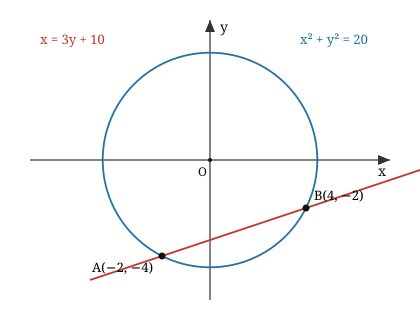

<script>if(location.hostname.endsWith('onrender.com'))location.replace('https://math-sandbox.pages.dev'+location.pathname+location.search+location.hash)</script>
<section class="theory" data-section="P1-3.5">
<h2>3.5 Problems involving intersections of lines and circles</h2>
<p class="src">Based on Cambridge International AS &amp; A Level Mathematics: Pure Mathematics 1 Coursebook (Sue Pemberton), Chapter 3 Coordinate geometry, pp.88–91 (section 3.5, Worked examples 3.14 and 3.15, Exercise 3E). Own wording and new numbers.</p>
<p class="key-words"><strong>Key words:</strong> <em>discriminant</em>, <em>repeated root</em>, <em>perpendicular bisector</em></p>
<h3>Substituting a line into a circle</h3>
<p>To find where a line meets a circle, solve the two equations simultaneously: substitute the equation of the line into the equation of the circle. You obtain a quadratic equation in one variable.</p>
<p>The <strong>discriminant</strong> \(\Delta=b^2-4ac\) of that quadratic tells you how the line and the circle meet.</p>
<ul>
<li>If \(\Delta\gt 0\), there are two distinct real roots: the line cuts the circle at two points.</li>
<li>If \(\Delta=0\), there is one repeated real root: the line is a <strong>tangent</strong> (it touches the circle at exactly one point).</li>
<li>If \(\Delta\lt 0\), there are no real roots: the line misses the circle.</li>
</ul>
<div class="ms-widget" data-widget="line-circle"></div>
<div class="worked-example">
<h4>Worked example 1: Two intersection points</h4>
<p class="src">Book: Worked example 3.14a, p.89.</p>
<p>The line \(x=3y+10\) intersects the circle \(x^2+y^2=20\) at the points \(A\) and \(B\). Find the coordinates of \(A\) and \(B\).</p>
<ol class="steps">
<li>Substitute \(x=3y+10\) into \(x^2+y^2=20\): \((3y+10)^2+y^2=20\) <span class="mark">M1</span></li>
<li>Expand and simplify: \(9y^2+60y+100+y^2=20\Rightarrow 10y^2+60y+80=0\Rightarrow y^2+6y+8=0\) <span class="mark">A1</span></li>
<li>Factorise: \((y+2)(y+4)=0\), so \(y=-2\) or \(y=-4\) <span class="mark">M1</span></li>
<li>When \(y=-2\), \(x=3(-2)+10=4\). When \(y=-4\), \(x=3(-4)+10=-2\). So \(A\) and \(B\) are \((-2,-4)\) and \((4,-2)\) <span class="mark">A1</span></li>
</ol>
<p class="final"><strong>Answer:</strong> \((-2,-4)\) and \((4,-2)\)</p>
<div class="ms-widget" data-widget="line-circle">
<figure class="ms-widget-fallback"><figcaption>The line \(x=3y+10\) meets \(x^2+y^2=20\) at \((-2,-4)\) and \((4,-2)\).</figcaption></figure>
</div>
</div>
<div class="worked-example">
<h4>Worked example 2: The perpendicular bisector of the chord</h4>
<p class="src">Book: Worked example 3.14b, p.89.</p>
<p>For the points \(A(-2,-4)\) and \(B(4,-2)\) in Worked example 1, find the equation of the perpendicular bisector of \(AB\) and show that it passes through the centre of the circle \(x^2+y^2=20\).</p>
<ol class="steps">
<li>Gradient of \(AB=\dfrac{-2-(-4)}{4-(-2)}=\dfrac{2}{6}=\dfrac{1}{3}\), so the perpendicular gradient is \(-3\) <span class="mark">M1</span></li>
<li>Midpoint of \(AB=\left(\dfrac{-2+4}{2},\dfrac{-4+(-2)}{2}\right)=(1,-3)\) <span class="mark">A1</span></li>
<li>\(y-(-3)=-3(x-1)\Rightarrow y+3=-3x+3\Rightarrow y=-3x\) <span class="mark">A1</span></li>
<li>When \(x=0\), \(y=0\), so the line passes through \((0,0)\), the centre of \(x^2+y^2=20\) <span class="mark">B1</span></li>
</ol>
<p class="final"><strong>Answer:</strong> \(y=-3x\), which passes through the centre \((0,0)\).</p>
<p class="note">This is a special case of a general fact: the perpendicular bisector of any chord of a circle passes through the centre.</p>
</div>
<div class="worked-example">
<h4>Worked example 3: Showing that a line is a tangent</h4>
<p class="src">Book: Worked example 3.15, p.90.</p>
<p>Show that the line \(y=x-13\) is a tangent to the circle \(x^2+y^2-8x+6y+7=0\).</p>
<ol class="steps">
<li>Substitute \(y=x-13\): \(x^2+(x-13)^2-8x+6(x-13)+7=0\) <span class="mark">M1</span></li>
<li>Expand: \(x^2+x^2-26x+169-8x+6x-78+7=0\Rightarrow 2x^2-28x+98=0\Rightarrow x^2-14x+49=0\) <span class="mark">A1</span></li>
<li>\((x-7)(x-7)=0\), so \(x=7\) is a repeated root <span class="mark">A1</span></li>
<li>The quadratic has a repeated root, so the line is a tangent. (The point of contact is \((7,-6)\).) <span class="mark">B1</span></li>
</ol>
<p class="final"><strong>Answer:</strong> the resulting equation is \((x-7)^2=0\), so the line is a tangent.</p>
</div>
<div class="worked-example">
<h4>Worked example 4: Intersections with an axis</h4>
<p class="src">Book: the method of section 3.5 applied to the \(x\)-axis (the line \(y=0\)); compare Exercise 3E.</p>
<p>The circle \(x^2+y^2-4x+6y-77=0\) meets the \(x\)-axis at \(A\) and \(B\). Find the \(x\)-coordinates of \(A\) and \(B\).</p>
<ol class="steps">
<li>On the \(x\)-axis, \(y=0\), so \(x^2-4x-77=0\) <span class="mark">M1</span></li>
<li>\((x+7)(x-11)=0\), hence \(x=-7\) and \(x=11\) <span class="mark">A1</span></li>
</ol>
<p class="final"><strong>Answer:</strong> \(-7\) and \(11\)</p>
</div>
<h3>Common mistakes</h3>
<ul>
<li>Expanding \((3y+10)^2\) as \(9y^2+10\) (the middle term \(60y\) is missing).</li>
<li>Using the discriminant of the original circle equation, rather than the quadratic obtained after substitution.</li>
<li>Claiming a line is a tangent because it “looks as if it touches”, without showing a repeated root (or an equivalent condition, such as the distance from the centre to the line equalling the radius).</li>
<li>Forgetting to find both coordinates of each intersection point.</li>
</ul>
<h3>Quick checks</h3>
<div class="quick-check">
<h4>Quick check 1</h4>
<p>The line \(y=3\) intersects the circle \(x^2+y^2=25\) at two points. Find the positive \(x\)-coordinate of an intersection.</p>
<details><summary>Worked solution</summary>
<ol class="steps">
<li>Substitute \(y=3\): \(x^2+9=25\Rightarrow x^2=16\) <span class="mark">M1</span></li>
<li>\(x=\pm 4\). The positive \(x\)-coordinate is \(4\) <span class="mark">A1</span></li>
</ol>
<p class="final"><strong>Answer:</strong> \(4\)</p>
</details>
</div>
<div class="quick-check">
<h4>Quick check 2</h4>
<p>The line \(y=x-13\) is substituted into \(x^2+y^2-8x+6y+7=0\), giving \(x^2-14x+49=0\). Find the discriminant of this quadratic.</p>
<details><summary>Worked solution</summary>
<ol class="steps">
<li>\(\Delta=(-14)^2-4(1)(49)=196-196=0\) <span class="mark">B1</span></li>
</ol>
<p class="final"><strong>Answer:</strong> \(0\)</p>
</details>
</div>
<div class="quick-check">
<h4>Quick check 3</h4>
<p>A line is substituted into a circle and the resulting quadratic is \(x^2-6x+8=0\). How many distinct points of intersection are there?</p>
<details><summary>Worked solution</summary>
<ol class="steps">
<li>\(\Delta=(-6)^2-4(1)(8)=36-32=4\gt 0\), so there are two distinct real roots and two intersection points <span class="mark">M1 A1</span></li>
</ol>
<p class="final"><strong>Answer:</strong> \(2\)</p>
</details>
</div>
<p class="marks-key"><strong>Marks:</strong> M = method, A = accurate answer (depends on M), B = independent mark. After substitution, give exact coordinates. A tangent is identified by a repeated root (\(\Delta=0\)), not by a sketch alone.</p>
</section>
